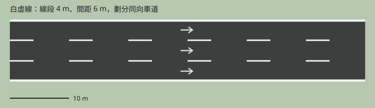

車道線 第182條
劃分各車道，指示車輛循車道行駛。

規格
| 類別 | 指示標線 |
|---|---|
| 顏色 | 白 |
| 線型 | 虛線 |
| 尺寸 | 白虛線，線段 4 公尺、間距 6 公尺，線寬 10 公分。 |
意義
劃分各車道，指示車輛循車道行駛。
設置地點
同向多車道的路段。（本條未另列設置地點，此為整理說明）
跨越或通行
虛線表示車道分隔，變換車道仍須依道路交通安全規則等規定。（整理說明）
常見誤解
- 高速公路主線車道線與匝道匯入處的「穿越虛線」（第189-1條）不同：穿越虛線線段 1 公尺、間距 2 公尺，較密。
出處
道路交通標誌標線號誌設置規則（民國115年03月11日修正）第182條。全國法規資料庫原文
本頁為條文整理，用字以原文為準；標「整理說明」者為本站補充。最後更新：2026-11-13